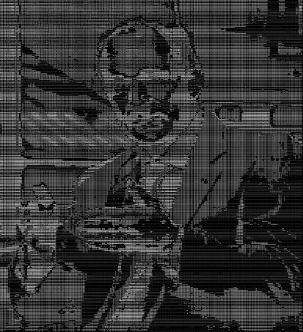
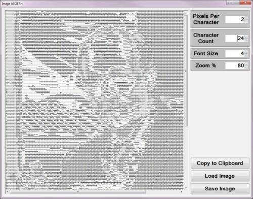
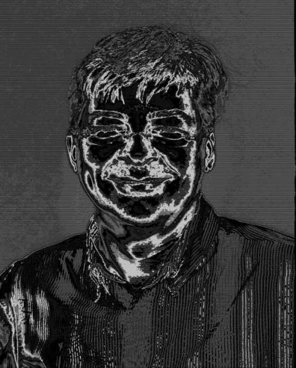
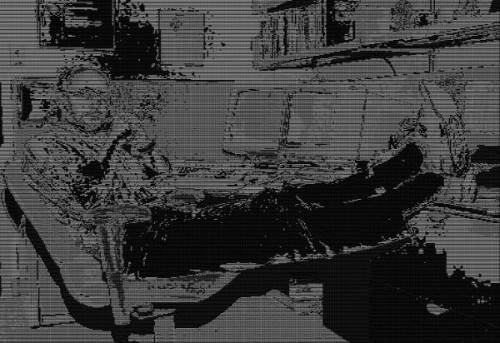
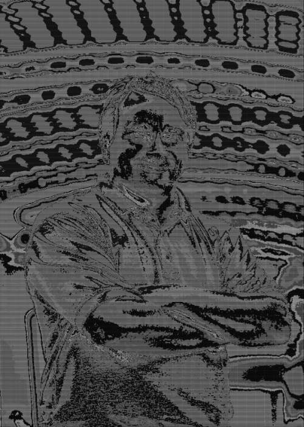
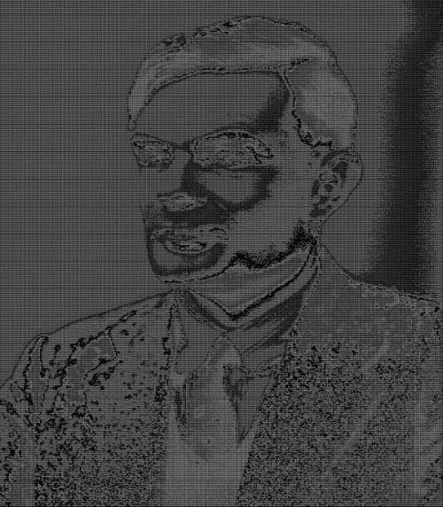
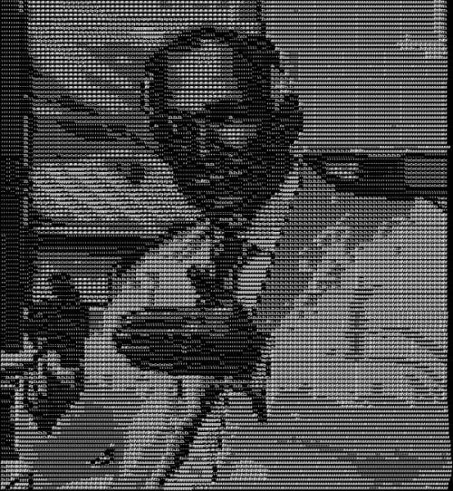
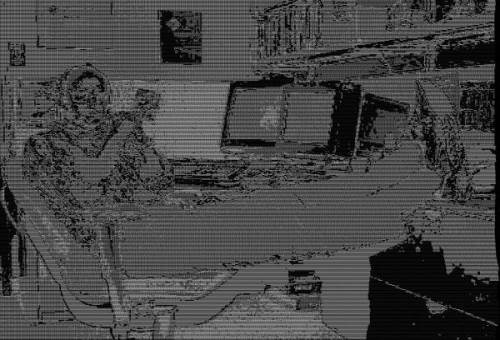
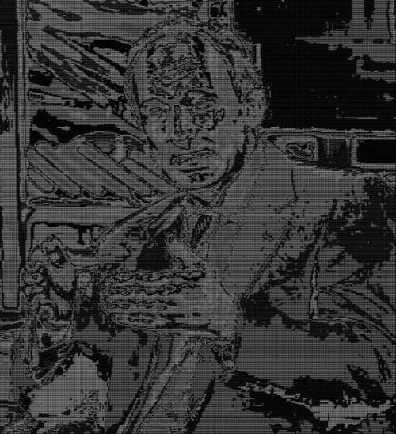
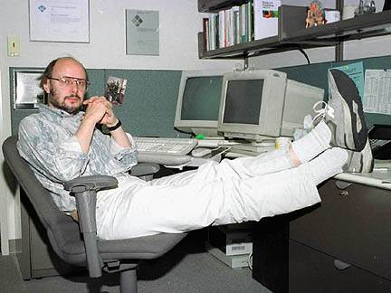

Image ASCII Art
Introduction
This article explores the concept of rendering ASCII Art from source images. Beyond exploring concepts this article also provides a practical implementation of all the steps required in creating an Image ASCII Filter.
Sir Tim Berners-Lee: 2 Pixels Per Character, 12 Characters, Font Size 4, Zoom 100

Building the Sample
There are no special requirements or instructions for building the sample source code.
Using the Sample Application
The sample source code that accompanies this article includes a sample application. The concepts illustrated in this article can tested and replicated using the sample application.
The sample application user interface implements a variety of functionality which can be described as follows:
- Loading/Saving Images – Users are able to load source/input images from the local file system through clicking the Load Image button. Rendered ASCII Art can be saved as an image file when clicking the Save Image button.
- Pixels Per Character – This configuration option determines the number of pixels represented by a single character. Lower values result in better detail/definition and a larger proportional output. Higher values result in less detail/definition and a smaller proportional output.
- Character Count – The number of unique characters to be rendered can be adjusted through updating this value. This value can be considered similar to number of shades of gray in a grayscale image.
- Font Size – This option determines the Font Size related to the rendered text.
- Zoom Level – Configure this value in order to apply a scaling level when rendering text.
- Copy to Clipboard – Copy the current ASCII Art string to the Windows Clipboard, in Rich Text Format.
The following image is screenshot of the Image ASCII Art sample application is action:

Anders Hejlsberg: 1 Pixel Per Character, 24 Characters, Font Size 6, Zoom 20

Converting Pixels to Characters
ASCII Art in various forms have been part of computer culture since the pioneering days of computing. From Wikipedia we gain the following:
ASCII art is a graphic design technique that uses computers for presentation and consists of pictures pieced together from the 95 printable (from a total of 128) characters defined by the ASCII Standard from 1963 and ASCII compliant character sets with proprietary extended characters (beyond the 128 characters of standard 7-bit ASCII). The term is also loosely used to refer to text based visual art in general. ASCII art can be created with any text editor, and is often used with free-form languages. Most examples of ASCII art require a fixed-width font (non-proportional fonts, as on a traditional typewriter) such as Courier for presentation.
Among the oldest known examples of ASCII art are the creations by computer-art pioneer Kenneth Knowlton from around 1966, who was working for Bell Labs at the time.[1] "Studies in Perception I" by Ken Knowlton and Leon Harmon from 1966 shows some examples of their early ASCII art.[2]
One of the main reasons ASCII art was born was because early printers often lacked graphics ability and thus characters were used in place of graphic marks. Also, to mark divisions between different print jobs from different users, bulk printers often used ASCII art to print large banners, making the division easier to spot so that the results could be more easily separated by a computer operator or clerk. ASCII art was also used in early e-mail when images could not be embedded.
Bjarne Stroustrup: 1 Pixel Per Character, 12 Characters, Font Size 6, Zoom 60

This article explores the steps involved in rendering text strings representing ASCII Art, implementing source/input images in rendering ASCII Art text representations. The following sections details the steps required to render ASCII Art text strings from source/input images:
- Generate Random Characters – Generate a string consisting of random characters. The number of characters will be determined through user input relating to the Character Count option. When generating the random string ensure that all characters added to the string are unique. In addition avoid adding control characters or punctuation characters. Control characters are non-visible characters such as Start of Text, Beep, New Line or Carriage Return. Most punctuation characters occupy a lot less screen space compared to regular alphabet characters.
- Determine Row and Column Count – Rows and Columns in terms of the Character Count option indicate the ratio between pixels and characters. The number of rows equate to the image height in pixels divided by the Character Count. The number of columns equate to the image width in pixels divided by the Character Count.
- Iterate Rows/Columns and Determine Colour Averages – Iterate image pixels in terms of a rows and columns grid strategy. Calculate the sum total of each grid region’s colour values. Calculate the average/mean colour value through dividing the colour sum total by the Character Count squared.
- Map Average Colour Intensity to a Character – Using the average colour values calculate in the previous step, calculate a colour intensity value ranging between 0 and the number of randomly generate characters. The intensity value should be implemented as an array index in accessing the string of random characters. All of the pixels included in calculating an average value should be represented by the random character located at the index equating to the colour average intensity value.
Linus Torvalds: 1 Pixel Per Character, 16 Characters, Font Size 5, Zoom 60

Converting Text to an Image
When rendering high definition ASCII Art the resulting text can easily consist of several thousand characters. Attempting to display such a vast number of text in a traditional text editor in most scenarios would be futile. An alternative method of retaining a high definition whilst still being viewable can be achieved through creating an image from the rendered text and then reducing the image dimensions.
The sample code employs the following steps when converting rendered text to an image:
- Determine Required Image Dimensions – Determine the image dimensions required to fit the rendered text.
- Create a new Image and set the background colour – After having determined the required image dimensions create a new image consisting of those dimensions. Set every pixel in the new image to Black.
- Draw Rendered Text – The rendered text should be drawn on the new image in plain White.
- Resize Image – In order to ensure more manageable image dimensions resize the image with a specified factor.
Alan Turing: 1 Pixel Per Character, 16 Characters, Font Size 4, Zoom 100

Implementing an Image ASCII Filter
The sample source code implements four methods when implementing an Image ASCII Filter, the methods are:
- ASCIIFilter
- GenerateRandomString
- RandomStringSort
- GetColorCharacter
The GenerateRandomString method, as the name implies, generates a string consisting of randomly selected characters. The number of characters contained in the string will be determined by the parameter value passed to this method. The following code snippet provides the implementation of the GenerateRandomString method:
private static string GenerateRandomString(int maxSize)
{
StringBuilder stringBuilder = new StringBuilder(maxSize);
Random randomChar = new Random();
char charValue;
for (int k = 0; k < maxSize; k++)
{
charValue = (char)(Math.Floor(255 * randomChar.NextDouble() * 4));
if (stringBuilder.ToString().IndexOf(charValue) != -1)
{
charValue = (char)(Math.Floor((byte)charValue *
randomChar.NextDouble()));
}
if (Char.IsControl(charValue) == false &&
Char.IsPunctuation(charValue) == false &&
stringBuilder.ToString().IndexOf(charValue) == -1)
{
stringBuilder.Append(charValue);
randomChar = new Random((int)((byte)charValue *
(k + 1) + DateTime.Now.Ticks));
}
else
{
randomChar = new Random((int)((byte)charValue *
(k + 1) + DateTime.UtcNow.Ticks));
k -= 1;
}
}
return stringBuilder.ToString().RandomStringSort();
}
private static string GenerateRandomString(int maxSize) { StringBuilder stringBuilder = new StringBuilder(maxSize); Random randomChar = new Random(); char charValue; for (int k = 0; k < maxSize; k++) { charValue = (char)(Math.Floor(255 * randomChar.NextDouble() * 4)); if (stringBuilder.ToString().IndexOf(charValue) != -1) { charValue = (char)(Math.Floor((byte)charValue * randomChar.NextDouble())); } if (Char.IsControl(charValue) == false && Char.IsPunctuation(charValue) == false && stringBuilder.ToString().IndexOf(charValue) == -1) { stringBuilder.Append(charValue); randomChar = new Random((int)((byte)charValue * (k + 1) + DateTime.Now.Ticks)); } else { randomChar = new Random((int)((byte)charValue * (k + 1) + DateTime.UtcNow.Ticks)); k -= 1; } } return stringBuilder.ToString().RandomStringSort(); }
Sir Tim Berners-Lee: 4 Pixels Per Character, 16 Characters, Font Size 6, Zoom 100

The RandomStringSort method has been defined as an extension method targeting the string class. This method provides a means of sorting a string in a random manner, in essence shuffling a string’s characters. The definition as follows:
public static string RandomStringSort(this string stringValue)
{
char[] charArray = stringValue.ToCharArray();
Random randomIndex = new Random((byte)charArray[0]);
int iterator = charArray.Length;
while(iterator > 1)
{
iterator -= 1;
int nextIndex = randomIndex.Next(iterator + 1);
char nextValue = charArray[nextIndex];
charArray[nextIndex] = charArray[iterator];
charArray[iterator] = nextValue;
}
return new string(charArray);
}
public static string RandomStringSort(this string stringValue) { char[] charArray = stringValue.ToCharArray(); Random randomIndex = new Random((byte)charArray[0]); int iterator = charArray.Length; while(iterator > 1) { iterator -= 1; int nextIndex = randomIndex.Next(iterator + 1); char nextValue = charArray[nextIndex]; charArray[nextIndex] = charArray[iterator]; charArray[iterator] = nextValue; } return new string(charArray); }
Anders Hejlsberg: 3 Pixels Per Character, 12 Characters, Font Size 5, Zoom 50
The sample source code defines the GetColorCharacter method, intended to map pixels to character values. This method has been defined as an extension method targeting the string class. The definition as follows:
private static string colorCharacters = "ABCDEFGHIJKLMNOPQRSTUVWXYZ";
private static string GetColorCharacter(int blue, int green, int red)
{
string colorChar = String.Empty;
int intensity = (blue + green + red) / 3 *
(colorCharacters.Length - 1) / 255;
colorChar = colorCharacters.Substring(intensity, 1).ToUpper();
colorChar += colorChar.ToLower();
return colorChar;
}
private static string colorCharacters = "ABCDEFGHIJKLMNOPQRSTUVWXYZ"; private static string GetColorCharacter(int blue, int green, int red) { string colorChar = String.Empty; int intensity = (blue + green + red) / 3 * (colorCharacters.Length - 1) / 255; colorChar = colorCharacters.Substring(intensity, 1).ToUpper(); colorChar += colorChar.ToLower(); return colorChar; }
Bjarne Stroustrup: 1 Pixel Per Character, 12 Characters, Font Size 4, Zoom 100

The ASCIIFilter method defined by the sample source code has the task of translating source/input images into text based ASCII Art. This method has been defined as an extension method targeting the Bitmap class. The following code snippet provides the definition:
public static string ASCIIFilter(this Bitmap sourceBitmap, int pixelBlockSize,
int colorCount = 0)
{
BitmapData sourceData = sourceBitmap.LockBits(new Rectangle (0, 0,
sourceBitmap.Width, sourceBitmap.Height),
ImageLockMode.ReadOnly,
PixelFormat.Format32bppArgb);
byte[] pixelBuffer = new byte[sourceData.Stride * sourceData.Height];
Marshal.Copy(sourceData.Scan0, pixelBuffer, 0, pixelBuffer.Length);
sourceBitmap.UnlockBits(sourceData);
StringBuilder asciiArt = new StringBuilder();
int avgBlue = 0;
int avgGreen = 0;
int avgRed = 0;
int offset = 0;
int rows = sourceBitmap.Height / pixelBlockSize;
int columns = sourceBitmap.Width / pixelBlockSize;
if (colorCount > 0)
{
colorCharacters = GenerateRandomString(colorCount);
}
for (int y = 0; y < rows; y++)
{
for (int x = 0; x < columns; x++)
{
avgBlue = 0;
avgGreen = 0;
avgRed = 0;
for (int pY = 0; pY < pixelBlockSize; pY++)
{
for (int pX = 0; pX < pixelBlockSize; pX++)
{
offset = y * pixelBlockSize * sourceData.Stride +
x * pixelBlockSize * 4;
offset += pY * sourceData.Stride;
offset += pX * 4;
avgBlue += pixelBuffer[offset];
avgGreen += pixelBuffer[offset + 1];
avgRed += pixelBuffer[offset + 2];
}
}
avgBlue = avgBlue / (pixelBlockSize * pixelBlockSize);
avgGreen = avgGreen / (pixelBlockSize * pixelBlockSize);
avgRed = avgRed / (pixelBlockSize * pixelBlockSize);
asciiArt.Append(GetColorCharacter(avgBlue, avgGreen, avgRed));
}
asciiArt.Append("\r\n" );
}
return asciiArt.ToString();
}
public static string ASCIIFilter(this Bitmap sourceBitmap, int pixelBlockSize, int colorCount = 0) { BitmapData sourceData = sourceBitmap.LockBits(new Rectangle (0, 0, sourceBitmap.Width, sourceBitmap.Height), ImageLockMode.ReadOnly, PixelFormat.Format32bppArgb); byte[] pixelBuffer = new byte[sourceData.Stride * sourceData.Height]; Marshal.Copy(sourceData.Scan0, pixelBuffer, 0, pixelBuffer.Length); sourceBitmap.UnlockBits(sourceData); StringBuilder asciiArt = new StringBuilder(); int avgBlue = 0; int avgGreen = 0; int avgRed = 0; int offset = 0; int rows = sourceBitmap.Height / pixelBlockSize; int columns = sourceBitmap.Width / pixelBlockSize; if (colorCount > 0) { colorCharacters = GenerateRandomString(colorCount); } for (int y = 0; y < rows; y++) { for (int x = 0; x < columns; x++) { avgBlue = 0; avgGreen = 0; avgRed = 0; for (int pY = 0; pY < pixelBlockSize; pY++) { for (int pX = 0; pX < pixelBlockSize; pX++) { offset = y * pixelBlockSize * sourceData.Stride + x * pixelBlockSize * 4; offset += pY * sourceData.Stride; offset += pX * 4; avgBlue += pixelBuffer[offset]; avgGreen += pixelBuffer[offset + 1]; avgRed += pixelBuffer[offset + 2]; } } avgBlue = avgBlue / (pixelBlockSize * pixelBlockSize); avgGreen = avgGreen / (pixelBlockSize * pixelBlockSize); avgRed = avgRed / (pixelBlockSize * pixelBlockSize); asciiArt.Append(GetColorCharacter(avgBlue, avgGreen, avgRed)); } asciiArt.Append("\r\n" ); } return asciiArt.ToString(); }
Linus Torvalds: 1 Pixel Per Character, 8 Characters, Font Size 4, Zoom 80
Implementing Text to Image Functionality
The sample source code implements the GDI+ Graphics class when drawing rendered ASCII Art text onto Bitmap images. The sample source code defines the TextToImage method, an extension method extending the string class. The definition listed as follows:
public static Bitmap TextToImage(this string text, Font font,
float factor)
{
Bitmap textBitmap = new Bitmap(1, 1);
Graphics graphics = Graphics.FromImage(textBitmap);
int width = (int)Math.Ceiling(
graphics.MeasureString(text, font).Width *
factor);
int height = (int)Math.Ceiling(
graphics.MeasureString(text, font).Height *
factor);
graphics.Dispose();
textBitmap = new Bitmap(width, height,
PixelFormat.Format32bppArgb);
graphics = Graphics.FromImage(textBitmap);
graphics.Clear(Color.Black);
graphics.CompositingQuality = CompositingQuality.HighQuality;
graphics.InterpolationMode = InterpolationMode.HighQualityBicubic;
graphics.PixelOffsetMode = PixelOffsetMode.HighQuality;
graphics.SmoothingMode = SmoothingMode.HighQuality;
graphics.TextRenderingHint = TextRenderingHint.AntiAliasGridFit;
graphics.ScaleTransform(factor, factor);
graphics.DrawString(text, font, Brushes.White, new PointF(0, 0));
graphics.Flush();
graphics.Dispose();
return textBitmap;
}
public static Bitmap TextToImage(this string text, Font font, float factor) { Bitmap textBitmap = new Bitmap(1, 1); Graphics graphics = Graphics.FromImage(textBitmap); int width = (int)Math.Ceiling( graphics.MeasureString(text, font).Width * factor); int height = (int)Math.Ceiling( graphics.MeasureString(text, font).Height * factor); graphics.Dispose(); textBitmap = new Bitmap(width, height, PixelFormat.Format32bppArgb); graphics = Graphics.FromImage(textBitmap); graphics.Clear(Color.Black); graphics.CompositingQuality = CompositingQuality.HighQuality; graphics.InterpolationMode = InterpolationMode.HighQualityBicubic; graphics.PixelOffsetMode = PixelOffsetMode.HighQuality; graphics.SmoothingMode = SmoothingMode.HighQuality; graphics.TextRenderingHint = TextRenderingHint.AntiAliasGridFit; graphics.ScaleTransform(factor, factor); graphics.DrawString(text, font, Brushes.White, new PointF(0, 0)); graphics.Flush(); graphics.Dispose(); return textBitmap; }
Sir Tim Berners-Lee: 1 Pixel Per Character, 32 Characters, Font Size 4, Zoom 100

Sample Images
This article features a number of sample images. All featured images have been licensed allowing for reproduction. The following image files feature a sample images:
- Alan Turing – British Mathematician and Computer Scientist, widely considered to be the father of Computer science and artificial intelligence. Wikipedia article. In regards to the image file used in this article: The copyright is held by the National Portrait Gallery, London. http://www.npg.org.uk/collections/search/portrait/mw165875. Download from Wikipedia.
- Anders Hejlsberg – Danish Software Engineer, original author of Turbo Pascal, chief architect of Delphi, lead architect of Microsoft C# and core developer of TypeScript. Wikipedia article. In regards to the image file used in this article: This file is licensed under the Creative Commons Attribution 2.0 Generic license. This image was originally posted to Flickr by DBegley at http://flickr.com/photos/9438069@N04/2985424826. It was reviewed on 7 April 2009 by the FlickreviewR robot and was confirmed to be licensed under the terms of the cc-by-2.0. Download from Wikipedia.
- Bjarne Stroustrup – Danish Computer Scientist, original developer of the C++ programming language. Wikipedia article. In regards to the image file used in this article: Permission is granted to copy, distribute and/or modify this document under the terms of the GNU Free Documentation License, Version 1.2 or any later version published by the Free Software Foundation; with no Invariant Sections, no Front-Cover Texts, and no Back-Cover Texts. A copy of the license is included in the section entitled GNU Free Documentation License. Download from Wikipedia.
- Linus Torvalds – Finnish American Software Engineer, chief architect and project coordinator of the Linux Kernel. Wikipedia article. In regards to the image file used in this article: This file is licensed under the Creative Commons Attribution-Share Alike 3.0 Unported license. The image is from an article in a December 2002 issue of Linux Magazine. Download from Wikipedia.
- Sir Tim Berners-Lee – British Computer Scientist, attributed as the inventor of the World Wide Web, director of the World Wide Web Consortium (W3C). Wikipedia article. In regards to the image file used in this article: This file is licensed under the Creative Commons Attribution-Share Alike 2.0 Generic license. This image, originally posted to Flickr, was reviewed on 15 March 2013 by the administrator or reviewer Morning Sunshine, who confirmed that it was available on Flickr under the stated license on that date. Download from Wikipedia.
{kind=link}
{kind=link}
{kind=link}
{kind=link}
{kind=link}
The following section lists the original image files that were used as source/input images in generating the ASCII Art images found throughout this article.
Alan Turing

Anders Hejlsberg
Bjarne Stroustrup

Linus Torvalds
Sir Tim Berners-Lee
Source Code Files
- ExtBitmap.cs - Provides the definition of the following methods: ASCIIFilter, GenerateRandomString, RandomStringSort, GetColorCharacter, TextToImage and ScaleBitmap.
- MainForm.cs - Windows Forms based test application.
More Information
This article is based on an article originally posted on my blog: http://softwarebydefault.com/2013/07/14/image-ascii-art/ If you have any questions/comments please feel free to make use of the Q&A section on this page, also please remember to rate this article.